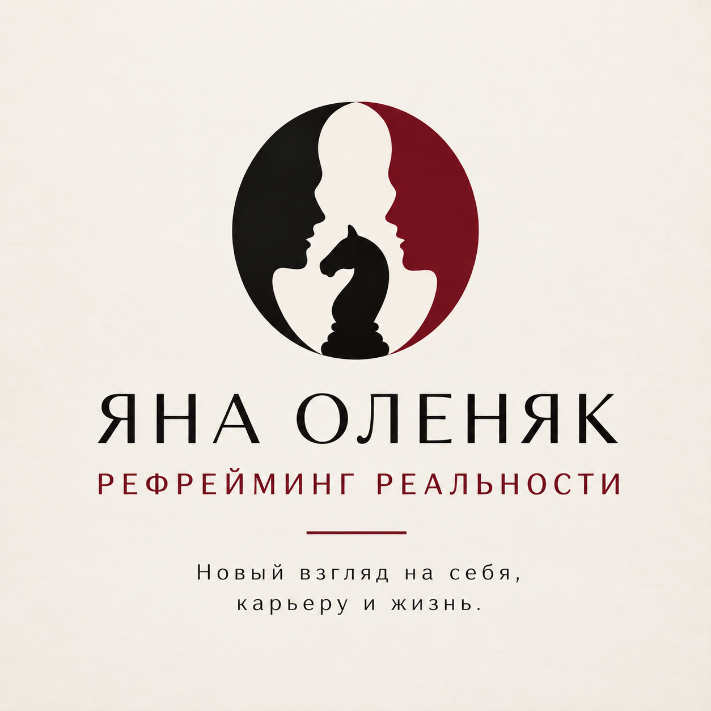

Оцените ситуацию
Честно и без оценок,
опираясь на свой опыт.

ЯНА ОЛЕНЯКРЕФРЕЙМИНГ РЕАЛЬНОСТИЧто даёт опору, а что хочется изменить?
Исследуйте восемь сфер и узнайте, что требует внимания.
8 сфер · 5 минут · без регистрации
После прохождения — диагностическая сессия с Яной в подарок.
Честно и без оценок,
опираясь на свой опыт.
Поймите, что для вас
действительно важно.
На подарочной сессии
с Яной определите свой путь.
Оценивайте свой реальный опыт, а не то, как должно быть.
Вспомните последние полгода карьерной деятельности. Колесо покажет, насколько работа подходит вам по смыслу, доходу, нагрузке и другим условиям. Если сейчас не работаете — оцените последние шесть месяцев своего профессионального опыта.
Важность на графике: 3 — невысокая, 6 — средняя, 9 — высокая.
Нажмите «Дальше», чтобы подтвердить оценку.
При открытии или обновлении страницы исследование начинается заново. Готовую карту можно скачать. Ответы не отправляются Яне автоматически.
Так Яна увидит ваше колесо и сможет обсудить с вами результат на диагностической сессии.
Картинку отправляете вы сами. Сайт не передаёт результаты автоматически.
Это гипотезы по вашим ответам: причины и подходящие решения можно исследовать на консультации.
ПОДАРОК ЗА МИНИ-ИССЛЕДОВАНИЕ
Вы завершили мини-исследование карьерного баланса. Приглашаю вас на диагностическую сессию в подарок. Вместе обсудим вашу карьерную картину, что сейчас требует внимания и с какого шага можно начать.
Диагностическая сессия — бесплатно. Время встречи согласуем в Telegram или MAX.
ОБО МНЕ
ЯнаРефрейминг реальности
ОБО МНЕ
Карьерный консультант, специалист по развитию талантов, практический психолог и методолог.
Работала в корпоративных университетах Pandora, «Магнит», «Дикси», ВТБ, Т1 и ЦБ РФ.
Участвовала в проекте Минцифры по профориентации женщин в IT, а также в профориентации школьников на IT-специальности.
НАПРАВЛЕНИЯ РАБОТЫ
Когда работа перестала радовать, стало трудно принимать решения или непонятно, чего хочется. Исследуем, что с вами происходит, что влияет на ваше состояние и где искать опору.
Когда прежнее направление больше не подходит, а новое пока неясно. Помогаю разобраться в происходящем, увидеть возможные пути и выбрать посильный следующий шаг.
Поиск работы, резюме, профессиональные переходы и смена карьеры. Разберём ваш опыт, сильные стороны и то, как представить их для нового шага.
ЗНАКОМО ЛИ ВАМ ЭТО?
«Мне поздно что-то менять»
«У меня не получится»
«Получаю только отказы»
«Со мной что-то не так»
С этими мыслями можно прийти на встречу. Вместе исследуем, что за ними стоит, и попробуем увидеть вашу ситуацию с другой стороны.